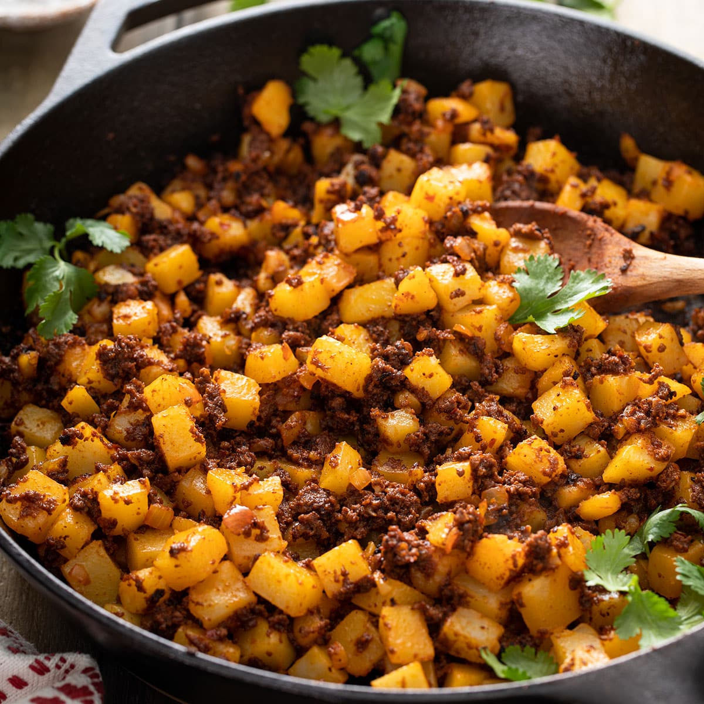

Papas con Chorizo

Description
Papas con chorizo is "potatoes with chorizo" in english. This classic Mexican dish combines tender potatoes with mouthwatering savory chorizo. There's nothing like a hot and steamy plate of papa con chorizo. Breakfast, lunch, and dinner, great dish any part of the day, ready in just 30 minute! Main ingredients are Mexican chorizo, yellow potatoes, and onion.
Ingredients
- ¼pound of yellow potatoes, cut into ¾-inch cubes
- ¾pound of fresh Mexican chorizo, casing removed
- vegetable oil, as needed
- 1 small onion, diced
- cilantro
- salt and ground black pepper to taste
Tips and Substitutions
- Vegetarian? No problem.
Swap the Mexican chorizo with a soy chorizo instead.
- Dice potatoes into smaller or larger pieces depending on preference and you are going to use them.
- Saltiness of store-bought chorizo can vary from brand to brand.
Recommend cooking dish entirely, then tasting and salting to your likeness.
Instructions
- In a medium saucepan, add potatoes. Cover completely with water, cover with lid, and bring to a boil over high heat.
- Reduce heat to simmer and cook for 5-9minutes, or until potatoes are cooked thoroughly. Potatoes should be tender and easily pricked with a fork, Carefully drain water and set aside.
- Heat olive oil in a large skillet over medium-heat. Add the onions and cook for 5 minutes, stirring occasionally, until softened and translucent.
- Add chorizo and break up into smaller chunks using a wooden spoon. Cook, stirring occasionally, until the chorizo is cooked through, about 8-10 minutes.
- Add potatoes and stir together to combine with the chorizo mixture. Cook for 5 more minutes.
- Taste and season with salt and peeper as necessary. Garnish with chopped cilantro and enjoy!